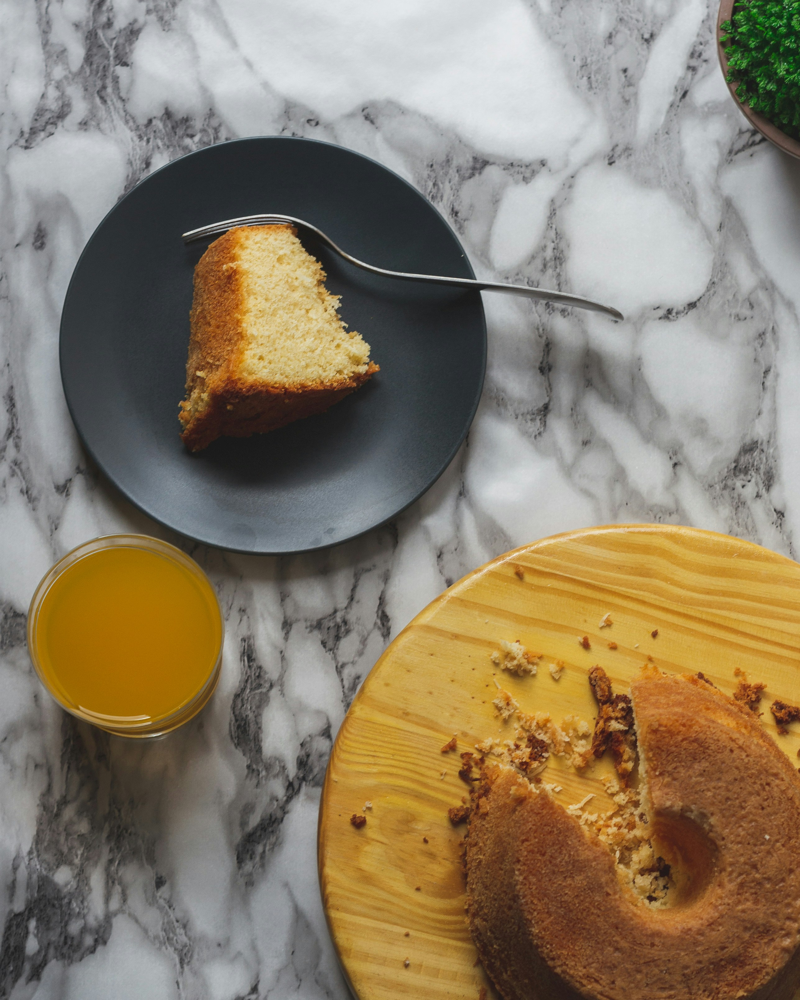

Orange Cake

Description
Delicious orange sponge cake that is versatile and easy to make. Perfect for your afternoon coffee!
Sponge Ingredients
4 egg whites
4 yolks
1 cup of orange juice
2 cups of sugar
2 cups of wheat flour
1 teaspoon baking powder
Steps
- Whip the egg whites until firm;
- Add the egg yolks one at a time, beating well between them;
- Still with the mixer running, add the sugar, orange juice and flour little by little in spoonfuls;
- After everything is well incorporated, turn off the mixer, add the baking powder and mix gently;
- Transfer the mixture to a greased pan and bake in a preheated oven at 180°C, until the house smells like cake.
Glaze Ingredients
1/2 cup of orange juice
1/2 cup of sugar
1/2 cup of milk
1 tablespoon of butter
Steps
- Place the juice, sugar and milk in a pan and heat until it boils;
- After boiling, turn off the heat, add the butter and mix until it melts completely;
- Put the hot syrup on top of the cake;